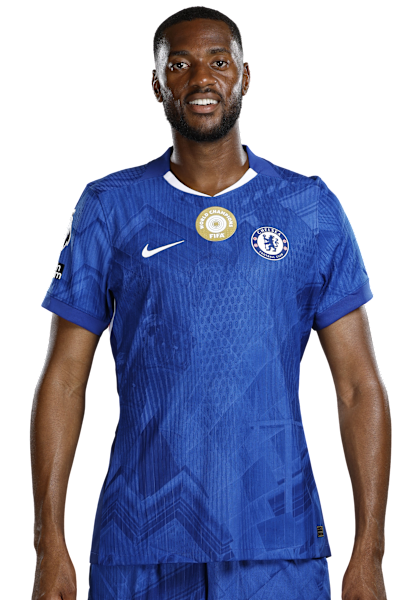
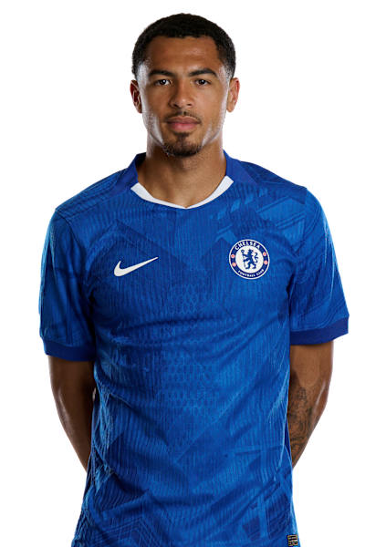
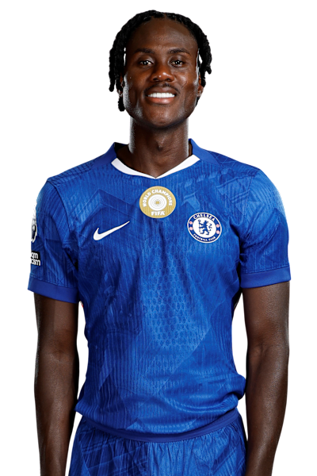
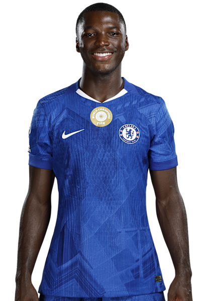
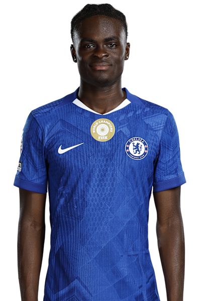

Équipe Première – Saison 2025/2026
Découvrez les joueurs qui portent fièrement les couleurs des Blues, sous la direction d’Enzo Maresca. Une équipe jeune, talentueuse et ambitieuse, prête à briller sur toutes les scènes.




